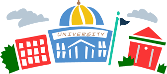
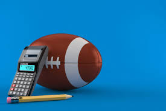

Chartered Professional Accountants
The CPA, the Chartered Professional Accountants, is the national organization that represents the accounting professional group. In order to obtain the CPA certification, a graduate program needs to be completed, the CPA Professional Education Program (CPA PEP). This is a 2-year part time program meant to be completed by accounting professionals who work full time.
Process to become a CPA
Complete:
- A bachelor degree (recommended to be related to accounting like BComm with concentration in accounting)
- Those who are non-accounting majors or are international students and missing accounting courses will have to take CPA preparatory courses (CPA PREP)
- These are 14 modules that need to be completed before being eligible for the CPA PEP
- Any prerequisites outlined in the CPA Competency Map
- At least 120 credit hours
- 2 core modules, 2 electives, 1 capstone integrative module, and 1 capstone exam prep mode
- The final three days of exams, the Common Final Examination (CFE)
- Experience Requirements
There is a requirement to pass the examination at the end of each module to be able to move on to the next module. To meet the experience requirements, one must take pre-approved programs in training positions, or complete Experience Verification, which consists in relevant work done at an employer of your choice. The practical experience requirement is designed to be completed within 30 months.
Education Background

Prior to completing the designation, a 3-year or a 4-year bachelor’s degree, or a Master’s degree is needed, as well as 120 credit hours, and successful completion of prerequisite courses. A grade of at least 60% is required in each core course, with an overall GPA of 65% in all core courses
The accounting degree can be earned in several forms:
- Accounting (Undergraduate):
This degree, offered in 26 programs in Ontario (including by Algoma, Brock, and Carleton), is meant to prepare students for the CPA designation by offering core and non-core CPA-approved prerequisite courses
- Accounting (Graduate / Postgraduate):
Offered in 14 Ontario programs, (including by McMaster, University of Toronto, and University of Waterloo), the degree combines core accounting courses with MBA courses as electives. Students who complete a combination of an undergraduate and a graduate program at a CPA-accredited post-secondary institute are exempt from part or all of CPA PEP modules
- Accounting (Certificate / Diploma))
Offered in 74 Ontario university and college programs (including Algonquin College, Cambrian College, and Canadore College), this certificate grants some credits towards CPA requirements, but work experience, a bachelor’s degree, or additional courses are required to enter the CPA designation program
The accounting degree can also be combined with a finance specialization at some post-secondary institutions, including Queen’s, Ryerson, and Seneca College
Although it is recommended to have a degree in accounting, it is also possible to have a bachelor in another field. There is a possibility to get part-time internships as an undergrad student before the CPA designation, but the designation is highly beneficial to advancing in the career. There are specific courses required before entering the process to receive the CPA designation
Non-Core Courses Required (passing grade of 50%):
• Introductory Financial Accounting
• Introductory Management Accounting
• Economics
• Statistics
• Business Law
• Information Technology
Core Courses Required (passing grade of 60%):
• Intermediate Financial Reporting 1
• Intermediate Financial Reporting 2
• Advanced Financial Reporting
•Corporate Finance
• Audit and Assurance
• Taxation
• Intermediate Management Accounting
• Performance Management
Once in the CPA PEP, the credit hours, modules, examinations, and training/experience requirements outlined in ‘Process to become a CPA’ must be met to receive the designation.
Students who are not working and can study full time can accelerate the process of receiving CPA designation by completing the 2 core modules at the same time, and then completing the 2 elective modules simultaneously. The process can also be accelerated by getting a bachelor and/or master’s degree from a CPA accredited post-secondary institute (CPA PSI). By earning those degrees, you earn part or all of the modules covered in CPA PEP and are exempt from doing them after your degree.
Someone without an accounting degree can enter the CPA PEP if they have at least 8 years of relevant work experience. They can also take any missing courses at a college or university, or sign up for CPA preparatory courses if they have at least 30 post-secondary credit hours, or 3 years of relevant work experience.
Specializations
Accounting knowledge can be applied to various different industries.
- Forensic Accounting:
Examine financial documents to gather evidence of securities fraud, money-laundering, credit-card fraud, and illegal financial acts. Forensic accountants also write reports and give evidence in court hearings and trials
- Environmental Accounting:
Examine the costs of cleaning spills and waste removal, the lost revenue from perceived environmental irresponsibility, and the cost of pursuing more ecological processes in a business. Environmental accountants can work for automakers, chemical firms, and other agencies.
- Personal Financial Planning:
CPAs can also assist clients by helping them plan their college educations, retirements, spending, and estates, by recommending an optimal mix of stocks, bonds, and other financial assets
- Information Technology Auditing:
Accountants with this specialization combine computer science and accounting knowledge to detect risks of unauthorized data entry which would modify financial reports and filings
- Sports Accounting:
Analyze the financials of sport franchises to assist in decisions like the setting of ticket prices, sponsorship deals, broadcast rights, and the salaries of athletes and coaches
